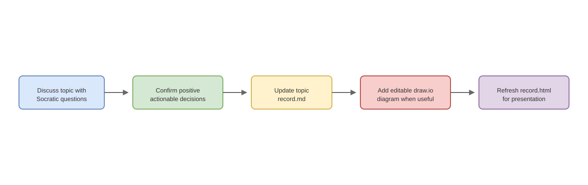

Conversation Record Workflow
Topic
This topic defines a persistent workflow for recording agreed conversation outcomes in this repository.
Confirmed Decisions
- Conversation records live under
conversation-records/. - Each topic gets its own folder named from the conversation content, using lowercase English words joined with hyphens.
- Each topic folder keeps a live Markdown record named
record.md. - Each topic folder keeps a presentation HTML file named
record.html. record.mdis updated while the conversation develops.record.htmlis updated after the Markdown record is complete enough to present.- When a topic needs an illustration, draw.io is the preferred format.
- Editable
.drawiofiles live in the same topic folder as the topic record. - The Markdown and HTML records link to the topic's draw.io files when diagrams are included.
- Records focus on confirmed, positive, actionable decisions: what to do, what has been agreed, and what the current conclusion is.
- During conversation, the assistant should use high-intensity Socratic questioning to clarify goals, boundaries, success criteria, evidence, tradeoffs, and next action before treating a topic as settled.
AGENTS.mdstores the workflow rule, while actual topic records stay inconversation-records/.AGENTS.mdis appended only; existing content is preserved.
Folder Pattern
conversation-records/
<topic-slug>/
record.md
record.html
<topic-slug>.drawioIllustration
Conversation Record Workflow flow:

The diagram captures the agreed flow: discuss deeply, confirm positive decisions, update record.md, add draw.io diagrams when useful, and refresh record.html when the topic is ready to present.
Editable source: conversation-record-workflow.drawio (open in app.diagrams.net to edit).
Success Criteria
- The workflow can be followed by future agents during normal chat.
- Topic records stay easy to browse because each topic has its own folder.
- Markdown remains the source record during discussion.
- HTML provides a readable presentation view when a topic is mature.
- Draw.io keeps formal diagrams editable.